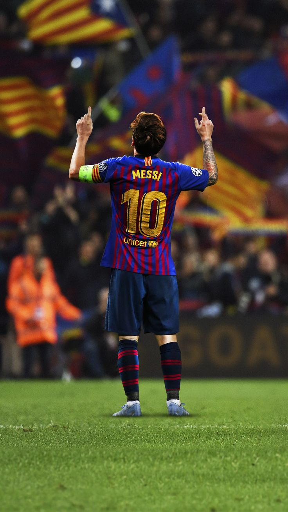
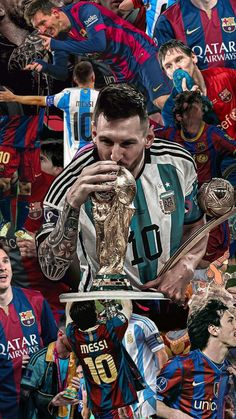
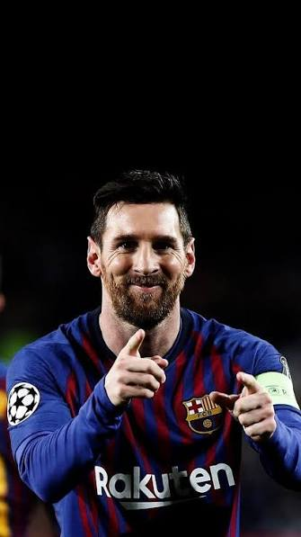
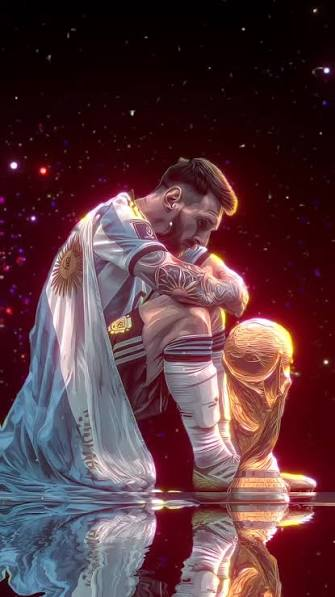

Lionel Messi
Capitán de la Selección Argentina.
Momentos de su carrera

Capitán de la Selección Argentina.

Máximo goleador de la historia del club.

Ganó la Copa del Mundo en Catar 2022.

Su equipo actual en la MLS.
Lionel Andrés Messi nació en Rosario en 1987 y es ocho veces ganador del Balón de Oro.